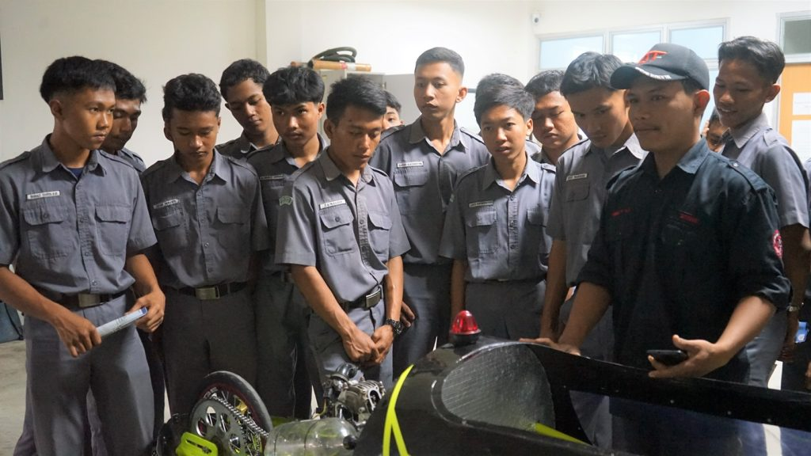

Kepala SMKN 1 Bumiratu Nuban, Nur Hasanah, S.Pd., menyampaikan apresiasinya atas kesempatan ini dan berharap para siswa semakin termotivasi untuk melanjutkan pendidikan. “Bekerja dan berwirausaha itu baik, tetapi melanjutkan pendidikan ke perguruan tinggi juga sangat penting untuk mempersiapkan masa depan kalian. Manfaatkan kunjungan ini untuk belajar lebih banyak,” ungkapnya. Dalam rangkaian acara, siswa dibagi menjadi dua kelompok untuk mengunjungi laboratorium. Di Laboratorium Teknik Mesin 2, siswa mendapatkan penjelasan mengenai teknologi dan peralatan yang ada dari Fuad Hakim, S.T., seorang laboran, serta anggota Himpunan Mahasiswa Teknik Mesin Itera. Sementara itu, siswa yang mengikuti pengenalan Teknik Informatika diarahkan ke Laboratorium Internet of Things (IoT). Di sana, mereka mendapatkan wawasan langsung dari dosen Teknik Informatika Itera, Radhinka Bagaskara, S.Si.Kom., M.Si., M.Sc., mengenai teknologi terkini dan potensi pengembangan IoT.
Kunjungan ini diharapkan mampu memberikan gambaran nyata tentang dunia perkuliahan di Itera, sekaligus menjadi motivasi bagi para siswa untuk mempersiapkan diri melanjutkan pendidikan sesuai dengan minat dan bakat mereka.